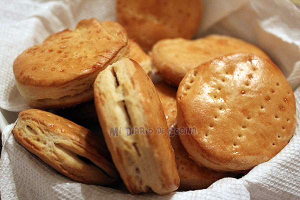

How to Make Hallulla

Description
Hallulla is one of the cornerstones of Chilean cuisine. This bread's crusty exterior and fluffy interior makes it the perfect container for your next favourite savory or sweet sandwich
Ingredients
To make 8 servings of hallulla you will need the following:
- 1 kilogram of all-purpose fluor
- 1 teaspoon of sugar
- 1 tablespoon of salt
- 15g of active yeast
- 50 grams of butter
- 300ml of water
- 300ml of whole milk
- Rolling Pin
- Circular mould
Note that you can get away with using bread fluor instead of all-purpose. This will require more water, as bread fluor makes the marraqueta drier.
Similarly, you can use instant yeast instead of active yeast. Because you will have to add sugar anyway, there is not much difference.
You can also use skimmed or lactose-free milk. The drawback is the texture will not be as rich as with whole milk.
The diameter of the circular mould impacts how big your hallulla will be. I reccommend a diameter of 15 cm (6 inches).
Steps
- First heat up the water up to 46°C (115°F), then pour the yeast and the sugar. Stir gently and let rise for 7 to 12 minutes.
- Pour the fluor on a large bowl and then add the salt, the water with the yeast and the milk. Knead by hand until the dough becomes uniform. This can take up to 10 minutes. Add extra water if the dough is too dry and extra fluor if the dough is too soggy. Add in small increments.
- Let the dough rest for 30 minutes. Alternatively, you can let it sit for longer to make the bread fluffier.
- Put the dough on a flat surface and using a rolling pin flatten it. Try to make it as spread out as possible.
- Fold the flatted dough in half and flatten again. Repeat the process for a total of 4 times.
- Having flattened the dough, use the circular mould and separate the dough into small circles.
- Pre-heat the oven to 204°C (400°F).
- To make the exterior tastier, brush some milk on the outside of the dough. Try to make a very thin layer.
- Put the bread in the oven and let sit for 14 to 20 minutes depending on how crunchy you want the exterior to be.
- Enjoy your bread!
Go Back